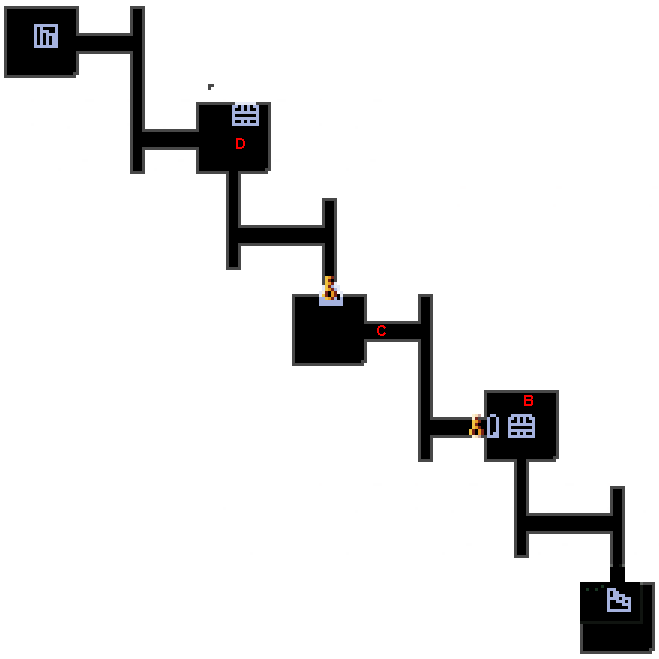

| A | A地点には大砲があります。 大砲の真後ろにツボがあり、中に爆弾が入っているので、ピピロの魔法などの遠距離攻撃でツボを破壊しましょう。 |
|  | B |
B地点の宝箱を開けると、中から爆弾が出てきます。 それと同時に周囲を骸骨で囲まれ、敵が現れます。 まずは素早く逃げ道を確保し、爆風から逃れましょう。 |
| C |
C付近で骸骨を破壊すると、自分の前と後ろに敵が亜現れます。 要するに挟み撃ちになるので注意しましょう。 |
| D |
骸骨が降ってきた順に破壊すれば宝箱が開きます。 |
| E |
E地点にある骸骨を破壊すると、E'地点へ続く扉が開きます。 部屋に入ると敵が現れ、全て倒すまでは出られません。 |
| F |
F地点の骸骨を破壊すると、F'地点へ続く扉が開きます。 部屋にはいるとタルが現れます。中は全て爆弾です。角から破壊していきましょう。 |
| G |
G地点にある骸骨を破壊すると、G'地点へ続く扉が開きます。 部屋にはいると敵とタルが現れます。タルの中は爆弾なので、敵を倒すまでは破壊しないよう注しましょう。 |